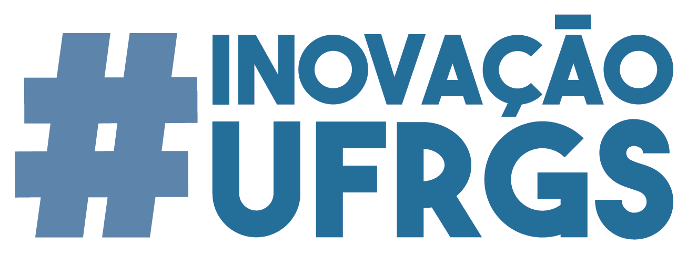

1º Datathon UFRGS
Eleições 2018 e Visualização de Dados
O Departamento de Estatística da UFRGS, em comemoração dos 40 anos do curso de Bacharelado em Estatística e dentro das atividades da Semanística, convida toda a comunidade acadêmica, e demais interessados em análise de dados, a participar do 1º Datathon da UFRGS.
O 1º Datathon da UFRGS é um evento que visa proporcionar a estatísticos, matemáticos, cientistas da computação, cientistas políticos, jornalistas, publicitários, designers, programodores, hackers e todas as pessoas criativas engajadas, a criação colaborativa de soluções tecnológicas principalmente a partir do repositório de dados eleitorais do Tribunal Superior Eleitoral (TSE). Será uma maratona de análise de dados em que as equipes irão propor alternativas para que dados eleitorais sejam disponibilizados com transparência e acessibilidade a qualquer cidadão.
O evento acontece de 15 a 17 de outubro, no Departamento de Estatística, Campus do Vale - UFRGS. Além da maratona de dados, a programação contará com palestras e oficinas de programação estatística utilizando o software R:
- Web scraping;
- visualização de dados e o pacote ggplot2: gráficos estáticos x interativos;
- visualização de dados: mapas para dados georreferenciados;
- relatórios via Rmarkdown.
Comece a pensar em sua proposta! Ênfase será dada a soluções de visualização de dados com o objetivo de facilitar a acessibilidade dos resultados a qualquer cidadão. Também são bem-vindas propostas de ferramentas de busca nas bases do TSE, integração com outras bases de dados públicos e projeção de votos. Use a sua imaginação! Veja aqui alguns Exemplos de propostas.
Convide seus colegas e amigos!!! Encorajamos grupos mistos de participantes com diferentes níveis de experiência em programação computacional e de diferentes áreas do conhecimento. SEE YOU THERE!!!
Calendário:
| Data | Atividade |
|---|---|
| 15/09 | Abertura das inscrições - INSCRIÇÕES |
| 15/10 | Oficina de apresentação do 1º Datathon |
| 15/10 - 16/10 | Datathon |
| 17/10 | Pitch - apresentação das soluções e premiação |
Apoio:
